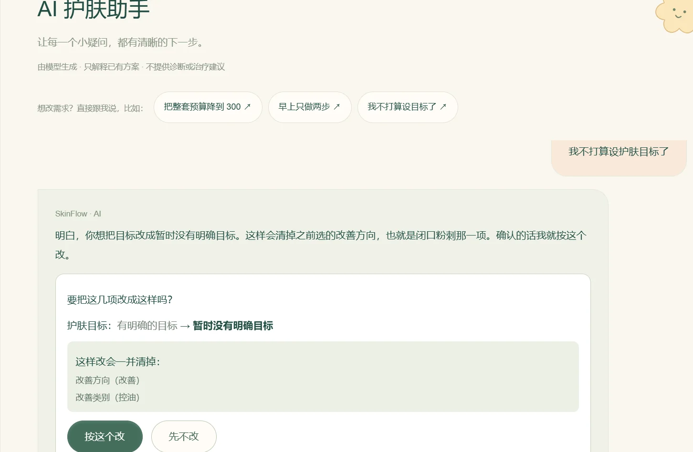
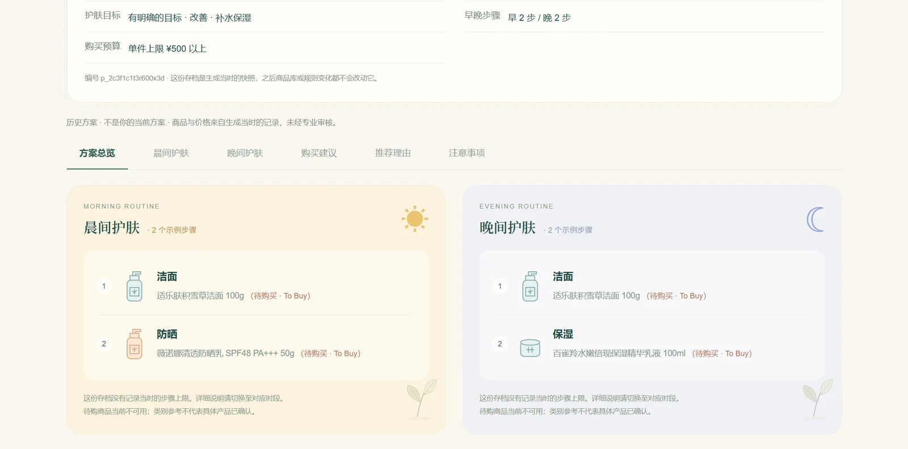
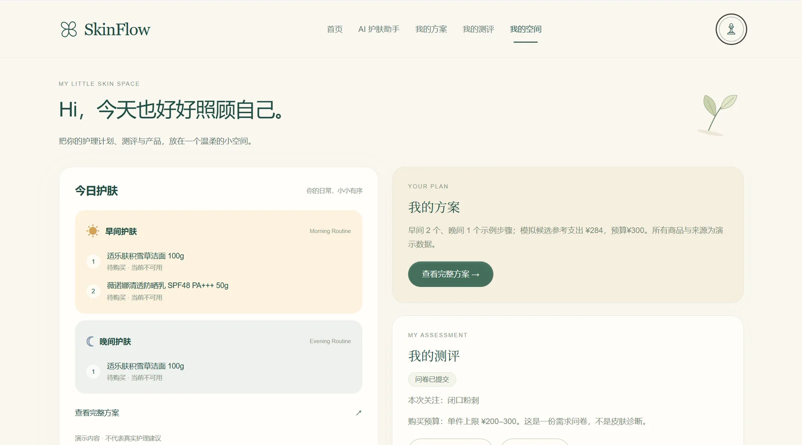
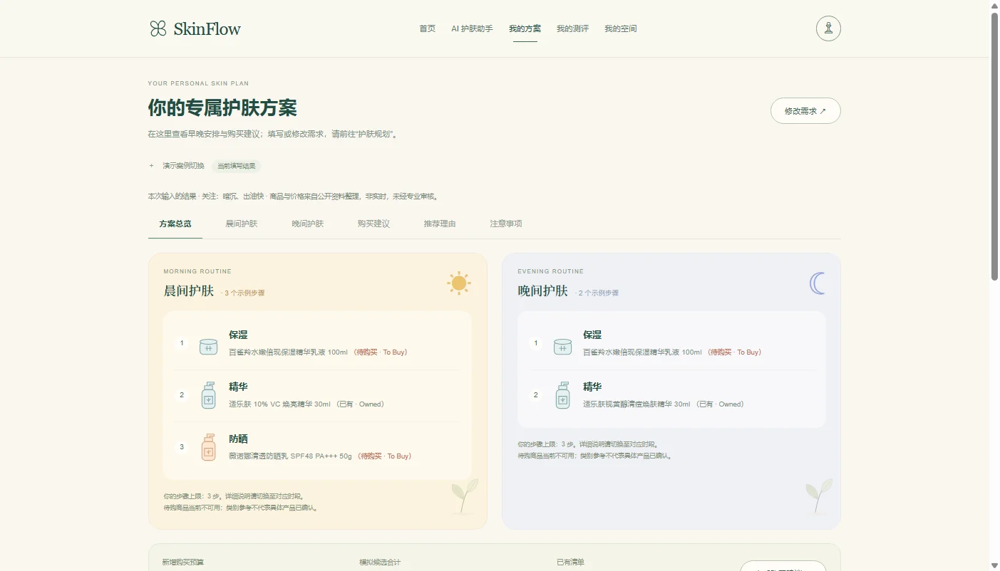
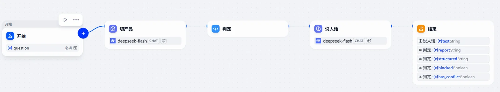

用户是两类人：手上没有产品、不知道先买哪几样；或者已经买了几瓶、不知道能不能叠、先涂哪个。
系统把问卷折成一组约束（目标、预算、早晚步数、是否保守处理），在自建产品目录里做筛选和排期，输出上面四类结果。助手在旁边做两件事：解释方案里的每一步；接收“想改某几项需求”的话，转成待确认的修改。
| 部分 | 产出 | 关键数字 |
|---|---|---|
| 数据搜集与核验 | 原料目录、法规三表、成分卡、口语别名、缺口规则 | 8,986 条目录 |
| 判定规则与引擎 | 属性位体系、三层判定、三态输出、排期与缺口算法 | 435 对 → 10 条规则 |
| Dify 工作流 | 判定 demo、引导问答、生成与自检脚本 | 2 个工作流 / 16 节点 |
| 后端 | FastAPI 服务、Next.js 前端、云存档、对话改需求 | 14 个模块 / 4 次发布 |
| 评测 | 数据闸门、一致性比对、判定专项、裸模型对照 | 36 项闸门 / 16 例实跑 |
判定表不是凭空写的：每条成分先落到目录序号和法规条款，再谈规则。
| 数据 | 规模 | 来源 | 用途 |
|---|---|---|---|
| 已使用化妆品原料目录 | 8,986 条 | 中检院开放查询接口，90 次分页抓取 | 成分是否合法收录、目录序号 |
| 化妆品安全技术规范 | 563 页 | 药监局公告附件 PDF | 限用 47 / 准用防腐剂 51 / 准用防晒剂 27 |
| 成分卡 | 30 张 | 逐条整理，每条标来源与证据等级 | 名称、INCI、别名、孕期/光敏、功效标签 |
| 判定属性位 | 30 组 | 从成分卡派生 | 刺激 / 时段 / 剥脱 / 光敏 / 缓冲 |
| 口语别名 | 70 条 | 手动整理 | “洗面奶”“刷酸”“小白瓶”→ 品类或成分 |
| 产品目录 | 样本 50 款 | 人工核验，字段按全量设计 | 排期与缺口筛选 |
成分卡长这样（视黄醇，节选主要字段）：
{
"id": "ING-002",
"cn_name": "视黄醇",
"inci_name": "RETINOL",
"aliases": ["A醇", "维生素A醇", "Retinol"],
"nmpa": { "catalog": "I", "seq": "06162" },
"role": "active",
"efficacy_tags": ["促进代谢", "抗老"],
"typical_conc_range": "0.1-0.5%",
"pm_only": true,
"phototoxic": false,
"pregnancy_flag": "avoid",
"sensitive_caution": true,
"evidence": [
{ "claim": "收录于《已使用化妆品原料目录》I，序号 06162", "level": "A",
"source": "hzpsys.nidc.org.cn 实时查询" },
{ "claim": "起效需转化为视黄酸、建议夜间使用并建立耐受", "level": "B",
"source": "皮肤科外用维A类共识性用法" }
]
}30 张成分卡各自带一节属性标注，判定用的属性位由这些标注派生，不另写一份表。加新成分只改一处，属性位和规则自动生效。
nmpa_check.json，含 30 条成分的原始响应，可回溯每条序号。
30 个成分两两组合是 435 对，逐个写规则写不完也维护不了。改成先给每个成分打 5 个属性位，规则写在属性上：两条“剥脱”不同晚，含“光敏”只在早，含“刺激”必须有“缓冲”。规则从 435 条降到 10 条；加新成分只需标属性，不改规则。
输出三种：冲突、查证可同次、没把握。规则没覆盖到的组合落到第三态，在方案里单列，不并入“可以一起用”。漏判冲突的代价不对称，所以默认取“没把握”。

判定 demo：5 个节点，只有「切产品」「说人话」调模型，冲突判定在代码节点里——与 Web 版共用同一份规则表。
引导问答：抽槽位 → 合并槽位 → 分流，按 out_of_scope / needs_asking / has_products 判成四路；只有走主链的一路再依次调「切产品 → 判定 → 说人话」。
| 节点类型 | 数量 | 具体节点 |
|---|---|---|
| 模型节点（LLM） | 3 | 抽槽位、切产品、说人话 |
| 代码节点 | 7 | 合并槽位、记录槽位（四路各一）、冲突判定、缺口推荐 |
| 回答节点 | 4 | 正式回答、追问、建议就医、缺口回答 |
| 控制节点 | 2 | 开始、条件分支（四路） |
16 个节点里只有 3 个调模型，判定全在代码节点里——和 Web 版共用同一份规则表。
两个 Dify 应用不是手工点的：build_dsl.py 与 build_chatflow_dsl.py 从 data/ 生成，生成前跑 36 项数据检查，生成后自检节点顺序、连线、变量引用与代码往返一致。
改规则不用进 Dify 界面：改数据表、重跑四个脚本、重新导入即可。规则能回归，工作流也能回归。
| 层 | 做法 | 结果 |
|---|---|---|
| 数据闸门 | 36 项检查，不通过不允许生成工作流 | 通过才生成 |
| 一致性 | Dify 里的代码节点 vs 本地判定器，11 场景逐条比对 | 一致 |
| 判定专项 | 16 例在 Dify 里实跑 | 16 / 16 |
| 对照实验 | 同一套用例跑裸模型 | 5 / 10 |
16/16 只说明链路没退化：用例是自己写的，关键词也按引擎实际输出校对过，它不衡量系统好坏。有区分力的是同题对照里裸模型的 5/10——它在最该防的两条上都答错了。
判定、对话、存档、限额分开成模块，前端只负责收集答案和展示结果。
| 模块 | 职责 |
|---|---|
engine.py | 排期、冲突、缺口、预算判定 |
constraints.py | 问卷答案折算成约束 |
answers_v2.py | 30 字段问卷映射与分支裁剪 |
assistant.py | 意图路由、改需求、越界拦截 |
llm.py / prompts.py | 只写文案的润色层与三套提示词 |
store.py | 方案存档（本地文件 / 云服务双实现） |
ratelimit.py | 每 IP 30 次/小时、全站 40 次/天 |
模型拿到的是算完的方案，只能按步骤 id 换文字。无 key、超时、限额、返回非 JSON、文案不合格，五种情况都退回规则文案，接口始终返回完整方案。
模型给结构化修改，前端按问卷真实选项复验一遍；改肤质会连带清掉追问答案，这一步先算好、列在确认卡上。可改字段固定 10 个，值必须逐字命中选项，多选必须是完整列表。
| 项 | 内容 |
|---|---|
| 在线应用 | skinflow-plan.app.workbuddy.host |
| Dify 工作流 | 判定 demo（5 节点）/ 引导问答（16 节点） |
| 代码 | 后端 14 个模块 · 前端 20+ 组件 · 32 次提交 |
| 测试 | 38 条状态机 · 12 条改需求单测 · 4 支浏览器验收 · 9+2 冒烟 |
| 文档 | 25 条决策记录，每条含背景、选项、理由、证据 |